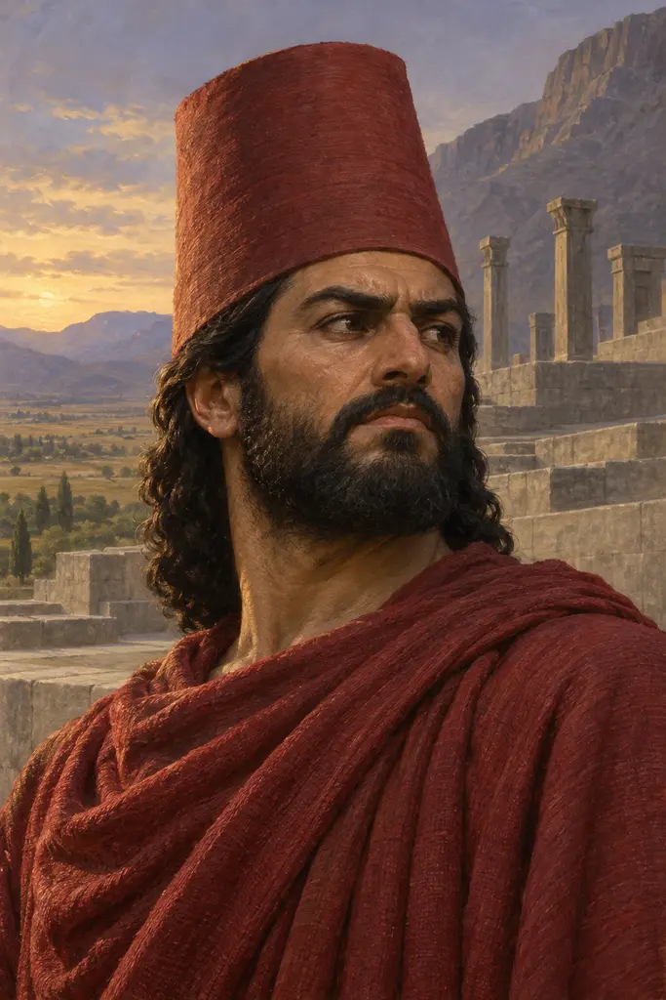
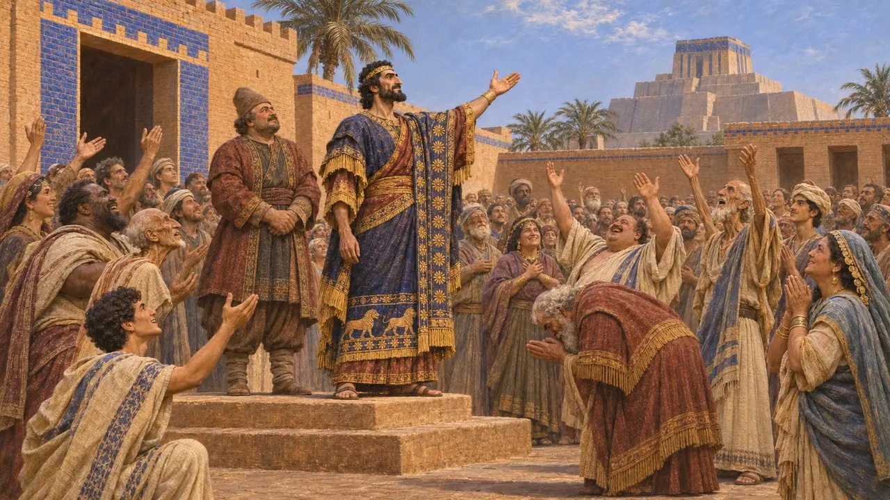
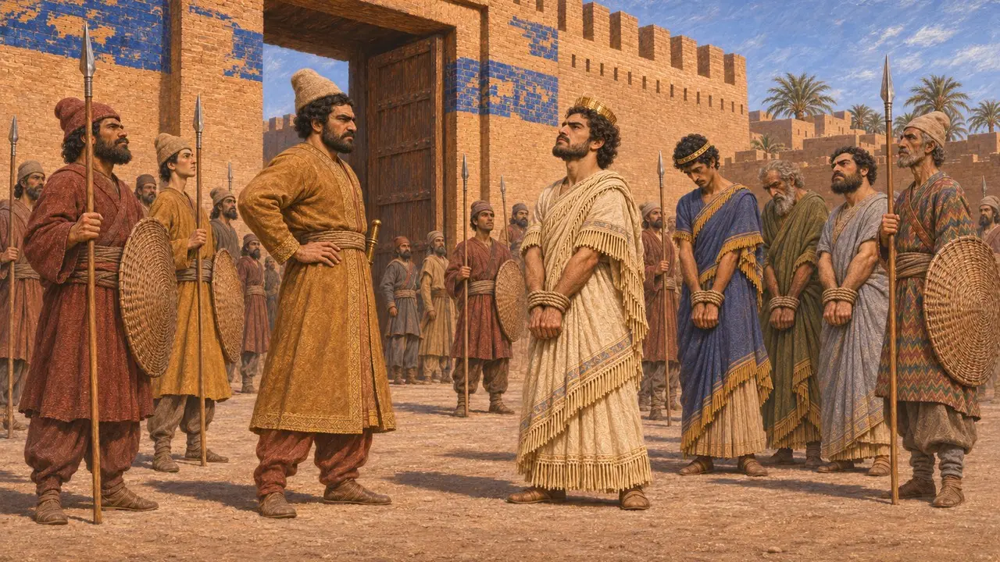
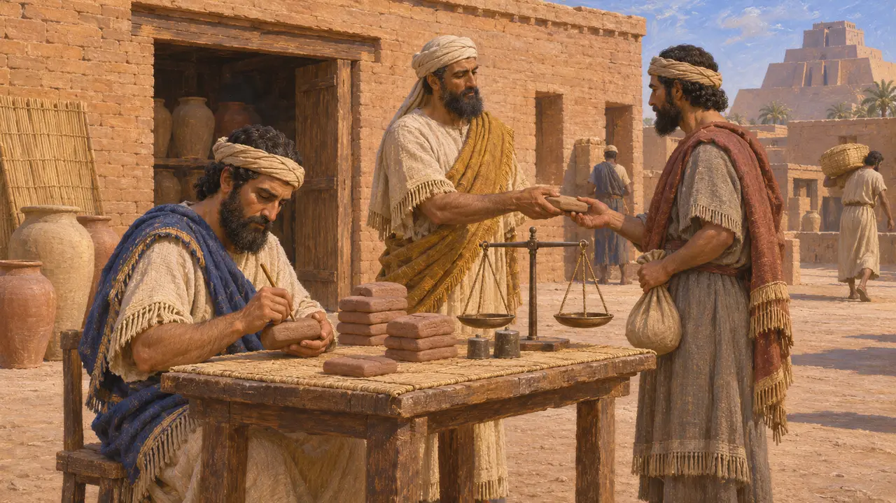
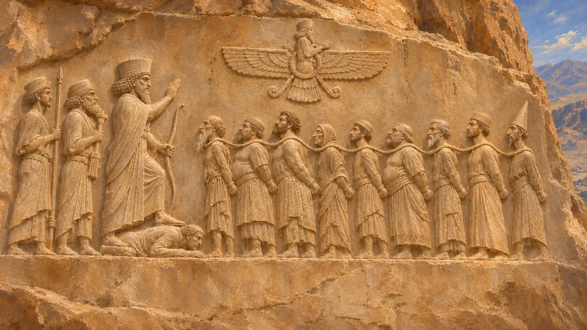
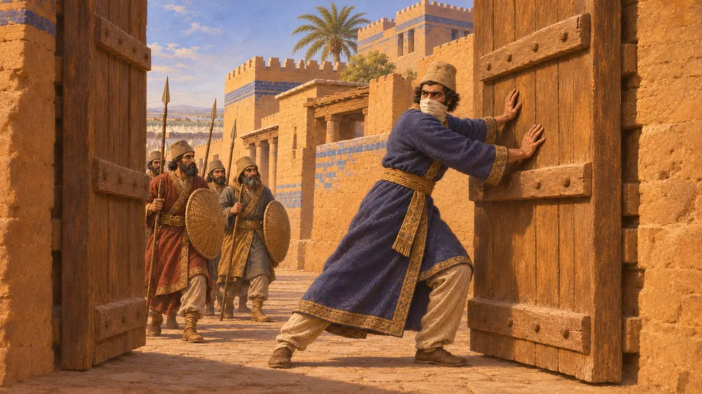

Araha
Babil'i IV. Nabukadnezar adıyla yöneten Armenialı asi, MÖ 521
Araha, MÖ 521'de son yerli kral Nabonidus'un oğlu Nabukadnezar olduğunu öne sürerek Babil'i ele geçiren bir Armenialıydı. Onun ayaklanması, yaklaşık bir yıl içinde Dareios'a karşı patlak veren ikinci Babil isyanıydı. Dareios'un komutanı İntaphernes kenti MÖ 521'in sonlarında geri aldı. İsyanın bastırılması, Kambyses'in ölümünün ardından gelen ayaklanma dalgasının sona ermesine yardımcı oldu.
Oyunda: Araha, oyunun kroniğinde yalnızca MÖ 521 yılının Babilli bir asisi olarak geçer. Nottaki bilgiler (Armenia kökenli oluşu, Nabukadnezar adı ve İntaphernes tarafından yakalanışı) Behistun yazıtıyla örtüşür.

Babil'in ikinci ayaklanması
BelgelerdeDareios'un Behistun yazıtına göre, kendisi Persis ve Medya'dayken Babil ikinci kez ayaklandı. Haldita oğlu Armenialı Araha adında bir adam, Dubala adlı bir Babil bölgesinde baş kaldırdı. Halka kendisinin Nabonidus oğlu Nabukadnezar olduğunu söyledi ve Babil onu kral olarak kabul etti. Yalnızca birkaç ay önce Dareios, aynı iddiayı ortaya atan Nidintu-Bel'i ezmişti.
DB §49

İntaphernes kenti alıyor
BelgelerdeDareios, Yunan yazarların Intaphernes dediği Pers soylusu Vindafarna komutasında bir ordu gönderdi. Vindafarna, yazıtta adı geçen altı yardımcıdan biriydi. Behistun'a göre Babillileri yendi ve MÖ 521 yılının sonlarında, Varkazana ayında Babil'i ele geçirdi. Araha ve önde gelen adamları yakalanarak Babil'de kazığa geçirildi.
DB §50

Onun saltanatına tarihlenen tabletler
BelgelerdeBabil'deki ticari ve tapınak belgeleri, modern araştırmacıların IV. Nabukadnezar olarak numaralandırdığı Nabukadnezar adlı bir kralın yıllarına göre tarihlendirilmiştir. Babil ve çevre kentlerdeki kâtipler, MÖ 521 yılının ikinci yarısında birkaç ay boyunca onun adını kullandı. Bu tabletler, onun hükümranlığının yalnızca düşmanının kaydettiği bir iddia olmadığını, gerçek olduğunu ve gündelik hayatta tanındığını gösterir.
A. Kuhrt, The Persian Empire: A Corpus of Sources, 2007

Zincirli krallar arasında bir yalancı
TartışmalıBehistun kabartmasında Araha, Dareios'un önünde iple bağlanmış asiler arasında durur; kısa bir etiket onu Nabukadnezar olduğunu ileri süren bir yalancı olarak niteler. İsyanının tek anlatısı, her asiyi bir sahtekâr olarak sunan Dareios'tan gelir. Tarihçiler iki Babil isyanının kesin kronolojisini ve burada 'Armenialı' sözcüğünün ne anlama geldiğini tartışır. Babasının adı Haldita, Urartu tanrısı Haldi'yi hatırlatır.
DBi; P. Briant, From Cyrus to Alexander, 2002

Zopyros ve uzun kuşatma
Geç dönem efsanesiHerodotos, Dareios döneminde Babil'de çıkan ve on dokuz aydan uzun süren bir kuşatmaya sahne olan bir isyanı anlatır. İsyan, soylu Zopyros'un kendi bedenini sakatlayıp kaçak gibi davranması ve sonunda kentin kapılarını açmasıyla sona erer. Herodotos Araha'nın adını anmaz ve anlatı, sadakat üzerine ahlaki bir hikâye biçiminde kurulmuştur. Bazı tarihçiler bu olayı MÖ 522-521 isyanlarıyla ilişkilendirirken Ktesias, Kserkses döneminde çıkan ve bir Zopyros'un öldüğü bir Babil isyanından söz eder.
Herodotus 3.150-160
Kaynaklar
- Behistun inscription, DB §§49-50 and DBi
- R. Schmitt, The Bisitun Inscriptions of Darius the Great: Old Persian Text, 1991
- A. Kuhrt, The Persian Empire: A Corpus of Sources, 2007
- P. Briant, From Cyrus to Alexander, 2002
- Herodotus 3.150-160